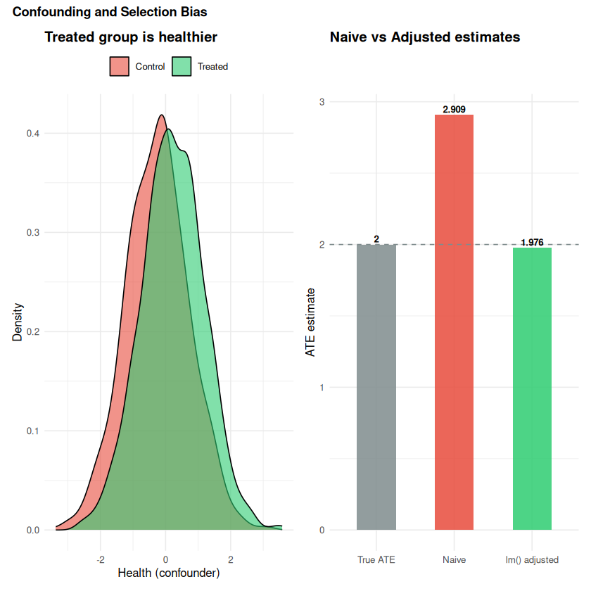
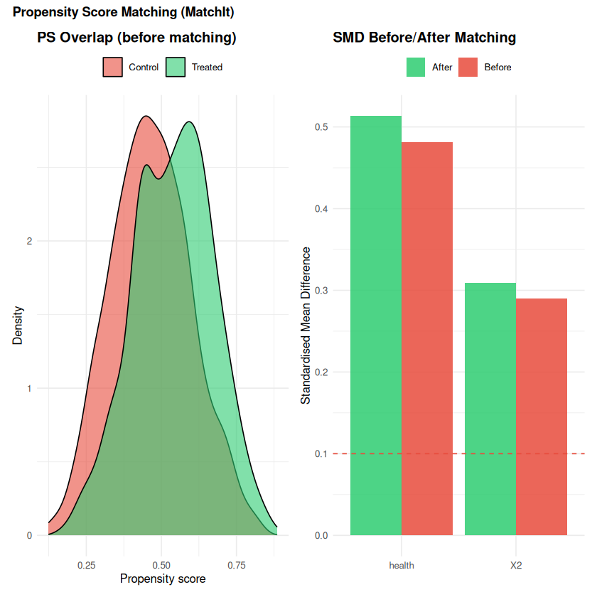
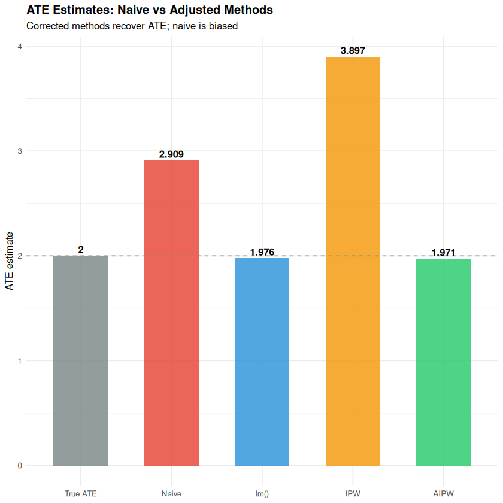
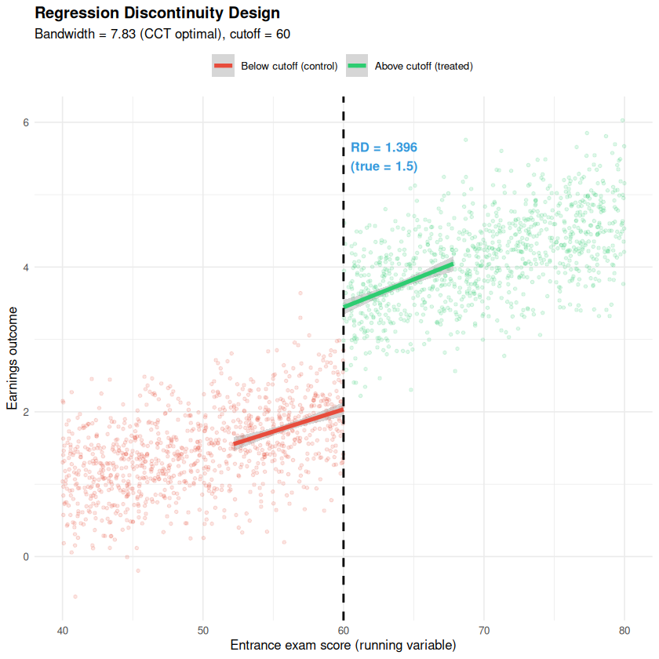
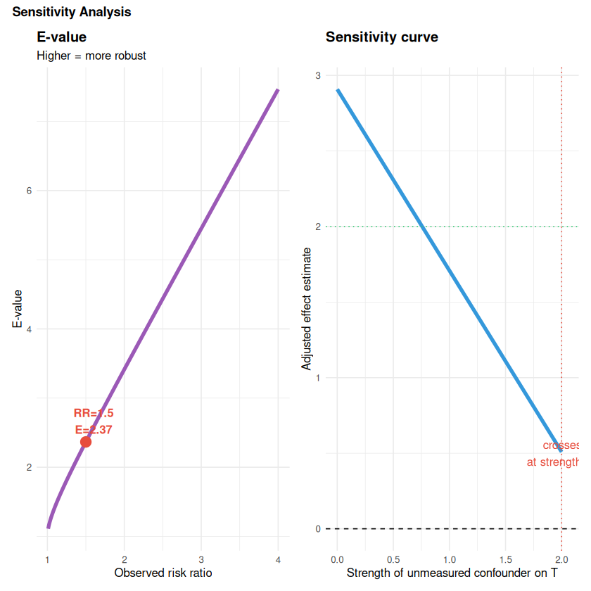

How do you estimate causal effects from observational data?#
Topics: Confounders - Propensity Score Matching (MatchIt) - IPW - Doubly Robust (AIPW) - Difference-in-Differences - Regression Discontinuity (rdrobust) - Sensitivity Analysis
Toy dataset: job training programme. Healthier workers self-select into training AND earn more. All sections use this shared confounded dataset. We compare naive estimates to corrected ones using each method.
SS1 – Confounders & Selection Bias#
What it is#
Confounder: causes both treatment and outcome – creates spurious association
Selection bias: treated and control groups differ systematically BEFORE treatment
Naive comparison mixes the treatment effect with pre-existing differences
Assumption: Ignorability (Unconfoundedness)#
\((Y(0), Y(1)) \perp T \mid X\) – given observed covariates, assignment is as good as random. Also called: no unmeasured confounders, selection on observables, conditional independence.
If violated#
IV (cml1 SS7) – find a variable that affects T but not Y directly
DiD (SS4) – use time variation to absorb fixed unobserved confounders
Sensitivity analysis (SS6) – bound the estimate under various confounding scenarios
library(ggplot2); library(patchwork)
# Show the confounder distribution and bias
p1 <- ggplot(df, aes(x = health, fill = factor(T))) +
geom_density(alpha = 0.6) +
scale_fill_manual(values = c("#E74C3C","#2ECC71"),
labels = c("Control","Treated")) +
labs(title = "Treated group is healthier",
x = "Health (confounder)", y = "Density", fill = NULL) +
theme_minimal(base_size = 10) + theme(plot.title = element_text(face = "bold"),
legend.position = "top")
# Adjusted estimate via lm()
adj_ate <- coef(lm(Y ~ T + health + X2, data = df))["T"]
est_df <- tibble::tibble(
label = factor(c("True ATE","Naive","lm() adjusted"),
levels = c("True ATE","Naive","lm() adjusted")),
value = c(true_ate, naive_ate, adj_ate)
)
p2 <- ggplot(est_df, aes(x = label, y = value, fill = label)) +
geom_col(alpha = 0.85, width = 0.5) +
geom_hline(yintercept = true_ate, linetype = "dashed", color = "#7F8C8D") +
geom_text(aes(label = round(value, 3)), vjust = -0.3, fontface = "bold", size = 2.8) +
scale_fill_manual(values = c("#7F8C8D","#E74C3C","#2ECC71"), guide = "none") +
labs(title = "Naive vs Adjusted estimates",
x = NULL, y = "ATE estimate") +
theme_minimal(base_size = 10) + theme(plot.title = element_text(face = "bold"))
cat(sprintf("True ATE : %.3f\n", true_ate))
cat(sprintf("Naive ATE : %.3f (biased upward)\n", naive_ate))
cat(sprintf("lm() adjusted : %.3f (controls for health + X2)\n", adj_ate))
p1 + p2 +
plot_annotation(title = "Confounding and Selection Bias",
theme = theme(plot.title = element_text(face = "bold", size = 11)))
True ATE : 2.000
Naive ATE : 2.909 (biased upward)
lm() adjusted : 1.976 (controls for health + X2)
{kind=link}

SS2 – Propensity Score Matching (MatchIt)#
What it is#
Propensity score: \(e(x) = P(T=1 \mid X=x)\)
Match each treated unit to a control with similar propensity score
Creates a pseudo-randomised dataset where groups are comparable
Assumptions#
Ignorability: no unmeasured confounders
Overlap: \(0 < P(T=1 \mid X) < 1\) for all X
SMD < 0.1 after matching
R: MatchIt package#
MatchIt::matchit() handles propensity model estimation, matching, and balance
checking in one call – far more robust than sklearn-based manual matching.
Reference#
Rosenbaum & Rubin (1983); Ho, Imai, King & Stuart (2011) on MatchIt
library(MatchIt)
library(ggplot2)
library(patchwork)
# Fit propensity score matching
m_out <- matchit(T ~ health + X2, data = df,
method = "nearest", # nearest-neighbour matching
distance = "logit", # propensity score via logistic regression
ratio = 1, # 1:1 matching
replace = FALSE)
summary(m_out) # shows SMD before/after
# Extract matched data
df_matched <- match.data(m_out)
psm_ate <- mean(df_matched$Y[df_matched$T==1]) -
mean(df_matched$Y[df_matched$T==0])
cat(sprintf("\nTrue ATE : %.3f\n", true_ate))
cat(sprintf("Naive ATE : %.3f\n", naive_ate))
cat(sprintf("PSM ATE : %.3f\n", psm_ate))
# Overlap plot (propensity scores before matching)
ps <- predict(glm(T ~ health + X2, data = df, family = binomial), type = "response")
df <- df |> mutate(pscore = ps)
p1 <- ggplot(df, aes(x = pscore, fill = factor(T))) +
geom_density(alpha = 0.6) +
scale_fill_manual(values = c("#E74C3C","#2ECC71"),
labels = c("Control","Treated")) +
labs(title = "PS Overlap (before matching)",
x = "Propensity score", y = "Density", fill = NULL) +
theme_minimal(base_size = 10) + theme(plot.title = element_text(face = "bold"),
legend.position = "top")
# Balance plot (SMD before/after)
smd_before <- abs(mean(df$health[df$T==1]) - mean(df$health[df$T==0])) /
sqrt((var(df$health[df$T==1]) + var(df$health[df$T==0])) / 2)
smd_after <- abs(mean(df_matched$health[df_matched$T==1]) -
mean(df_matched$health[df_matched$T==0])) /
sqrt((var(df_matched$health[df_matched$T==1]) +
var(df_matched$health[df_matched$T==0])) / 2)
bal_df <- tibble::tibble(
covariate = rep(c("health","X2"), 2),
when = rep(c("Before","After"), each = 2),
smd = c(
abs(mean(df$health[df$T==1]) - mean(df$health[df$T==0])) /
sqrt((var(df$health[df$T==1]) + var(df$health[df$T==0]))/2),
abs(mean(df$X2[df$T==1]) - mean(df$X2[df$T==0])) /
sqrt((var(df$X2[df$T==1]) + var(df$X2[df$T==0]))/2),
abs(mean(df_matched$health[df_matched$T==1]) - mean(df_matched$health[df_matched$T==0])) /
sqrt((var(df_matched$health[df_matched$T==1]) + var(df_matched$health[df_matched$T==0]))/2),
abs(mean(df_matched$X2[df_matched$T==1]) - mean(df_matched$X2[df_matched$T==0])) /
sqrt((var(df_matched$X2[df_matched$T==1]) + var(df_matched$X2[df_matched$T==0]))/2)
)
)
p2 <- ggplot(bal_df, aes(x = covariate, y = smd, fill = when)) +
geom_col(position = "dodge", alpha = 0.85) +
geom_hline(yintercept = 0.1, linetype = "dashed", color = "#E74C3C") +
scale_fill_manual(values = c("#2ECC71","#E74C3C")) +
labs(title = "SMD Before/After Matching",
x = NULL, y = "Standardised Mean Difference", fill = NULL) +
theme_minimal(base_size = 10) + theme(plot.title = element_text(face = "bold"),
legend.position = "top")
p1 + p2 +
plot_annotation(title = "Propensity Score Matching (MatchIt)",
theme = theme(plot.title = element_text(face = "bold", size = 11)))
Warning message:
“Fewer control units than treated units; not all treated units will get
a match.”
Call:
matchit(formula = T ~ health + X2, data = df, method = "nearest",
distance = "logit", replace = FALSE, ratio = 1)
Summary of Balance for All Data:
Means Treated Means Control Std. Mean Diff. Var. Ratio eCDF Mean
distance 0.5402 0.4654 0.5721 0.9810 0.1582
health 0.2157 -0.2497 0.4858 0.9644 0.1355
X2 0.1317 -0.1584 0.2925 0.9706 0.0816
eCDF Max
distance 0.2382
health 0.2151
X2 0.1282
Summary of Balance for Matched Data:
Means Treated Means Control Std. Mean Diff. Var. Ratio eCDF Mean
distance 0.5441 0.4654 0.6021 0.9187 0.1650
health 0.2408 -0.2497 0.5120 0.9182 0.1418
X2 0.1486 -0.1584 0.3095 0.9491 0.0860
eCDF Max Std. Pair Dist.
distance 0.2445 0.6021
health 0.2223 0.7286
X2 0.1328 0.9920
Sample Sizes:
Control Treated
All 994 1006
Matched 994 994
Unmatched 0 12
Discarded 0 0
True ATE : 2.000
Naive ATE : 2.909
PSM ATE : 2.956
{kind=link}

SS3 – IPW & Doubly Robust Estimation (AIPW)#
IPW (Inverse Probability Weighting)#
Reweight each observation by 1/P(received treatment)
Treated units with low propensity (unexpectedly treated) get high weight
Unbiased if the propensity model is correctly specified
Doubly Robust (AIPW)#
Combines an outcome model and a propensity model
Unbiased if either model is correctly specified (not necessarily both)
Standard default for observational ATE estimation in practice
library(dplyr); library(ggplot2)
# Estimate propensity scores
ps_model <- glm(T ~ health + X2, data = df, family = binomial)
ps <- predict(ps_model, type = "response")
# IPW estimate
df_ipw <- df |> mutate(
ps = ps,
weight = ifelse(T == 1, 1 / ps, 1 / (1 - ps))
)
ipw_ate <- mean(df_ipw$Y[df_ipw$T==1] / df_ipw$ps[df_ipw$T==1]) -
mean(df_ipw$Y[df_ipw$T==0] / (1 - df_ipw$ps[df_ipw$T==0]))
# Doubly Robust (AIPW)
# Outcome model: E[Y | T, X]
out_model_1 <- lm(Y ~ health + X2, data = filter(df, T == 1))
out_model_0 <- lm(Y ~ health + X2, data = filter(df, T == 0))
mu1_hat <- predict(out_model_1, newdata = df)
mu0_hat <- predict(out_model_0, newdata = df)
# AIPW influence function
aipw_scores <- (mu1_hat - mu0_hat) +
df$T / ps * (df$Y - mu1_hat) -
(1 - df$T) / (1 - ps) * (df$Y - mu0_hat)
aipw_ate <- mean(aipw_scores)
adj_ate <- coef(lm(Y ~ T + health + X2, data = df))["T"]
cat(sprintf("True ATE : %.3f\n", true_ate))
cat(sprintf("Naive ATE : %.3f\n", naive_ate))
cat(sprintf("lm() adjusted : %.3f\n", adj_ate))
cat(sprintf("IPW ATE : %.3f\n", ipw_ate))
cat(sprintf("AIPW ATE : %.3f <- doubly robust\n", aipw_ate))
est_all <- tibble::tibble(
method = factor(c("True ATE","Naive","lm()","IPW","AIPW"),
levels = c("True ATE","Naive","lm()","IPW","AIPW")),
ate = c(true_ate, naive_ate, adj_ate, ipw_ate, aipw_ate)
)
ggplot(est_all, aes(x = method, y = ate, fill = method)) +
geom_col(alpha = 0.85, width = 0.6) +
geom_hline(yintercept = true_ate, linetype = "dashed", color = "#7F8C8D") +
geom_text(aes(label = round(ate, 3)), vjust = -0.4, fontface = "bold", size = 3.5) +
scale_fill_manual(values = c("#7F8C8D","#E74C3C","#3498DB","#F39C12","#2ECC71"),
guide = "none") +
labs(title = "ATE Estimates: Naive vs Adjusted Methods",
subtitle = "Corrected methods recover ATE; naive is biased",
x = NULL, y = "ATE estimate") +
theme_minimal(base_size = 10) + theme(plot.title = element_text(face = "bold"))
True ATE : 2.000
Naive ATE : 2.909
lm() adjusted : 1.976
IPW ATE : 3.897
AIPW ATE : 1.971 <- doubly robust
{kind=link}

SS4 – Difference-in-Differences (DiD)#
What it is#
Compare the change in outcomes over time between a treated and a control group
Controls for time-invariant unobserved confounders (fixed effects)
Requires the parallel trends assumption: outcomes would trend the same without treatment
Formula#
Equivalently: \(Y = \alpha + \beta_1 \text{Post} + \beta_2 \text{Treated} + \beta_3 (\text{Post} \times \text{Treated}) + \varepsilon\). The coefficient \(\beta_3\) is the DiD estimator.
Assumptions#
Parallel trends: treated and control groups trend the same in the absence of treatment
No anticipation: units do not change behaviour before treatment
SUTVA: no spillover between groups
Validation#
Parallel pre-trends plot: do the groups trend together before treatment?
Event study: plot coefficients per period; pre-period coefs should be near zero
library(dplyr); library(ggplot2)
# Simulate a DiD panel: 200 units, 10 periods, treated from period 6 onwards
set.seed(42)
n_units <- 200; n_pre <- 5; n_post <- 5
did_true_ate <- 1.5
units <- rep(1:n_units, each = n_pre + n_post)
time_ <- rep(1:(n_pre + n_post), n_units)
treated_id <- sample(1:n_units, n_units / 2)
treated <- units %in% treated_id
post <- time_ > n_pre
# Unit-level fixed effects + common time trend + treatment
unit_fe <- rep(rnorm(n_units, 0, 2), each = n_pre + n_post)
time_fe <- rep(c(seq(0, 2, length.out = n_pre), seq(2.2, 3.5, length.out = n_post)),
n_units)
Y_did <- 5 + unit_fe + time_fe +
did_true_ate * (treated & post) +
rnorm(n_units * (n_pre + n_post), 0, 0.5)
panel <- tibble::tibble(unit = units, time = time_, treated = treated,
post = post, Y = Y_did)
# DiD regression (interaction term)
did_model <- lm(Y ~ post * treated, data = panel)
did_ate <- coef(did_model)["postTRUE:treatedTRUE"]
cat(sprintf("True DiD ATE : %.3f\n", did_true_ate))
cat(sprintf("DiD estimate : %.3f\n", did_ate))
# Parallel trends plot
mean_Y <- panel |> group_by(time, treated) |>
summarise(mean_Y = mean(Y), .groups = "drop")
ggplot(mean_Y, aes(x = time, y = mean_Y, color = treated, linetype = treated)) +
geom_line(linewidth = 1.2) +
geom_point(size = 3) +
geom_vline(xintercept = n_pre + 0.5, linetype = "dotted", color = "black", linewidth = 0.8) +
annotate("text", x = n_pre + 0.7, y = min(mean_Y$mean_Y) + 0.5,
label = "Treatment starts", hjust = 0, size = 3.5, color = "#555555") +
scale_color_manual(values = c("#E74C3C","#2ECC71"),
labels = c("Control","Treated")) +
scale_linetype_manual(values = c("solid","solid"),
labels = c("Control","Treated")) +
labs(title = sprintf("Difference-in-Differences (DiD estimate = %.3f, true = %.3f)",
did_ate, did_true_ate),
subtitle = "Parallel pre-trends support the assumption",
x = "Time period", y = "Mean outcome", color = NULL, linetype = NULL) +
theme_minimal(base_size = 10) + theme(plot.title = element_text(face = "bold"),
legend.position = "top")
{kind=link}
SS5 – Regression Discontinuity (RD)#
What it is#
Exploits a threshold rule: units just above and below the cutoff are similar except for treatment
Estimates a Local ATE (LATE) at the cutoff – not an ATE for the full population
Sharp RD: crossing cutoff deterministically assigns treatment
Fuzzy RD: crossing cutoff changes the probability of treatment (use IV approach)
Toy scenario#
Scholarship cutoff: students who score >= 60 on an entrance exam receive a scholarship (treatment). We compare earnings for students just above and just below the threshold.
R: rdrobust package#
Handles bandwidth selection (CCT), robust confidence intervals, and the McCrary density test all in one package – far more reliable than manual local linear regression.
Reference#
Imbens & Lemieux (2008); Calonico, Cattaneo & Titiunik (2014)
library(rdrobust)
library(ggplot2)
set.seed(42)
n_rd <- 2000
cutoff <- 60
rd_true <- 1.5
score <- runif(n_rd, 40, 80) # running variable: entrance exam score
T_rd <- as.integer(score >= cutoff) # sharp assignment
Y_rd <- 2 + 0.05 * (score - cutoff) + rd_true * T_rd +
0.01 * (score - cutoff) * T_rd + rnorm(n_rd, 0, 0.5)
# rdrobust: automatic bandwidth selection (CCT), bias-corrected CI
rdr <- rdrobust(Y_rd, score, c = cutoff)
cat("rdrobust output:\n")
print(summary(rdr))
cat(sprintf("\nTrue RD effect : %.3f\n", rd_true))
# Scatter plot with local linear fit each side
bw <- rdr$bws["h", 1] # optimal bandwidth
df_rd <- data.frame(score = score, Y = Y_rd, T = T_rd)
df_bw <- df_rd |> dplyr::filter(abs(score - cutoff) <= bw)
ggplot(df_rd, aes(x = score, y = Y, color = factor(T))) +
geom_point(alpha = 0.15, size = 1) +
geom_smooth(data = df_bw,
aes(group = factor(T)),
method = "lm", formula = y ~ x, se = TRUE, linewidth = 1.5) +
geom_vline(xintercept = cutoff, linetype = "dashed", color = "black", linewidth = 0.8) +
scale_color_manual(values = c("#E74C3C","#2ECC71"),
labels = c("Below cutoff (control)","Above cutoff (treated)")) +
annotate("text", x = cutoff + 0.5, y = max(Y_rd) - 0.5,
label = sprintf("RD = %.3f\n(true = %.1f)", rdr$coef["Conventional",], rd_true),
hjust = 0, fontface = "bold", size = 3.5, color = "#3498DB") +
labs(title = "Regression Discontinuity Design",
subtitle = sprintf("Bandwidth = %.2f (CCT optimal), cutoff = %d", bw, cutoff),
x = "Entrance exam score (running variable)", y = "Earnings outcome", color = NULL) +
theme_minimal(base_size = 10) + theme(plot.title = element_text(face = "bold"),
legend.position = "top")
rdrobust output:
Call: rdrobust
Sharp RD estimates using local polynomial regression.
Number of Obs. 2000
BW type mserd
Kernel Triangular
VCE method NN
Left Right
Number of Obs. 1023 977
Eff. Number of Obs. 392 364
Order est. (p) 1 1
Order bias (q) 2 2
BW est. (h) 7.830 7.830
BW bias (b) 12.322 12.322
rho (h/b) 0.635 0.635
Unique Obs. 1023 977
=====================================================================
Point Robust Inference
Estimate z P>|z| [ 95% C.I. ]
---------------------------------------------------------------------
RD Effect 1.396 14.540 0.000 [1.193 , 1.565]
=====================================================================
True RD effect : 1.500
{kind=link}

SS6 – Sensitivity Analysis#
Why it matters#
Unconfoundedness is untestable – there could always be a hidden confounder
Sensitivity analysis asks: how strong would U have to be to overturn my conclusion?
Every observational estimate should report at least one of these numbers
Three standard tools#
Tool |
Question |
Robust looks like |
|---|---|---|
E-value |
Minimum RR that U needs with both T and Y to explain the effect away |
Large E-value (> 2) |
Rosenbaum bounds (Gamma) |
How much could treatment odds differ between matched units before significance is lost? |
Large Gamma (> 2) |
Oster’s delta |
How much stronger does selection on unobservables need to be vs observables to drive the coefficient to 0? |
delta >= 1 |
Formula (E-value, VanderWeele & Ding 2017)#
For a risk ratio \(\text{RR} \geq 1\): $\(E = \text{RR} + \sqrt{\text{RR} \cdot (\text{RR} - 1)}\)$
library(ggplot2); library(patchwork)
# E-value function
e_value <- function(rr) {
rr <- ifelse(rr >= 1, rr, 1 / rr)
rr + sqrt(rr * (rr - 1))
}
# Our observational estimate: interpret as a risk ratio
observed_rr <- 1.5
cat(sprintf("Observed risk ratio : %.2f\n", observed_rr))
cat(sprintf("E-value : %.2f\n", e_value(observed_rr)))
cat("-> A hidden confounder would need RR >= this with BOTH treatment AND outcome\n")
cat(" to fully explain away the association.\n")
# E-value curve
rr_grid <- seq(1.01, 4.0, 0.01)
eval_df <- tibble::tibble(rr = rr_grid, eval = e_value(rr_grid))
p1 <- ggplot(eval_df, aes(x = rr, y = eval)) +
geom_line(color = "#9B59B6", linewidth = 1.5) +
geom_point(data = tibble::tibble(rr = observed_rr, eval = e_value(observed_rr)),
size = 4, color = "#E74C3C") +
annotate("text", x = observed_rr + 0.1, y = e_value(observed_rr) + 0.3,
label = sprintf("RR=%.1f\nE=%.2f", observed_rr, e_value(observed_rr)),
color = "#E74C3C", fontface = "bold", size = 3.5) +
labs(title = "E-value",
subtitle = "Higher = more robust",
x = "Observed risk ratio", y = "E-value") +
theme_minimal(base_size = 10) + theme(plot.title = element_text(face = "bold"))
# Sensitivity curve: how does estimate shift as confounder strength grows?
naive_effect <- naive_ate
conf_strength <- seq(0, 2.0, 0.05)
u_on_Y <- 1.2
adjusted_eff <- naive_effect - conf_strength * u_on_Y
cross_zero <- conf_strength[which.min(abs(adjusted_eff))]
p2 <- ggplot(
tibble::tibble(strength = conf_strength, effect = adjusted_eff),
aes(x = strength, y = effect)
) +
geom_line(color = "#3498DB", linewidth = 1.5) +
geom_hline(yintercept = 0, linetype = "dashed") +
geom_hline(yintercept = true_ate, linetype = "dotted", color = "#2ECC71") +
geom_vline(xintercept = cross_zero, linetype = "dotted", color = "#E74C3C") +
annotate("text", x = cross_zero + 0.05, y = 0.5,
label = sprintf("crosses 0\nat strength %.2f", cross_zero),
color = "#E74C3C", size = 3.5) +
labs(title = "Sensitivity curve",
x = "Strength of unmeasured confounder on T",
y = "Adjusted effect estimate") +
theme_minimal(base_size = 10) + theme(plot.title = element_text(face = "bold"))
p1 + p2 +
plot_annotation(title = "Sensitivity Analysis",
theme = theme(plot.title = element_text(face = "bold", size = 11)))
Observed risk ratio : 1.50
E-value : 2.37
-> A hidden confounder would need RR >= this with BOTH treatment AND outcome
to fully explain away the association.
{kind=link}

Method Comparison Summary#
Method |
Key R function |
Identifies |
Main assumption |
|---|---|---|---|
OLS with controls |
|
ATE |
All confounders measured |
PSM |
|
ATT |
All confounders + overlap |
IPW |
manual with |
ATE |
All confounders + overlap |
AIPW |
manual (doubly robust) |
ATE |
Either outcome or PS model correct |
DiD |
|
ATT |
Parallel trends |
RD |
|
LATE at cutoff |
Continuity at cutoff |
Interview Q&A#
When do you use DiD vs PSM? DiD: unmeasured confounders exist but are time-invariant (fixed unit effects). PSM: confounders are measured and you can match on them.
Sharp vs Fuzzy RD? Sharp: crossing the cutoff deterministically assigns treatment. Fuzzy: crossing changes the probability of treatment – use IV (Wald estimator).
What is the bandwidth choice problem in RD?
Too narrow: few observations, high variance. Too wide: units far from cutoff differ systematically.
Use data-driven CCT bandwidth selection via rdrobust.
How do you report sensitivity of an observational estimate? Report the E-value alongside the estimate: “the conclusion holds unless an unmeasured confounder is associated with both treatment and outcome with risk ratio at least E.” If E is small (< 1.5), the estimate is fragile.
Gotchas#
PSM without an overlap check can silently extrapolate – always plot propensity scores first
DiD requires parallel PRE-trends, not just parallel levels – always plot the pre-period
RD estimates are local – do not generalise to units far from the cutoff
IPW is sensitive to extreme propensity scores – trim at (0.05, 0.95)